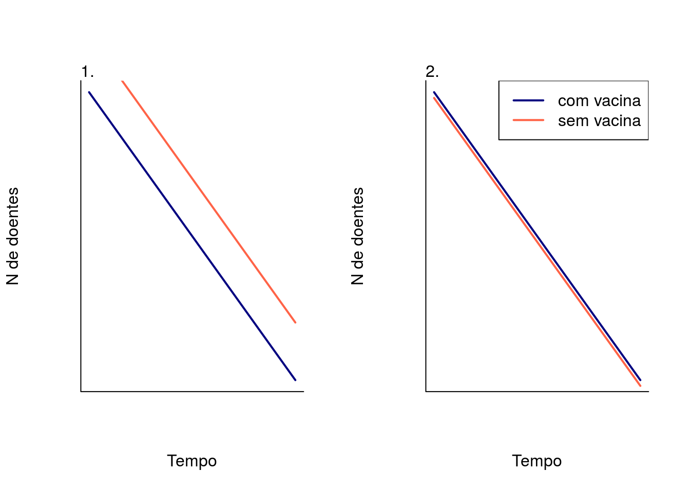
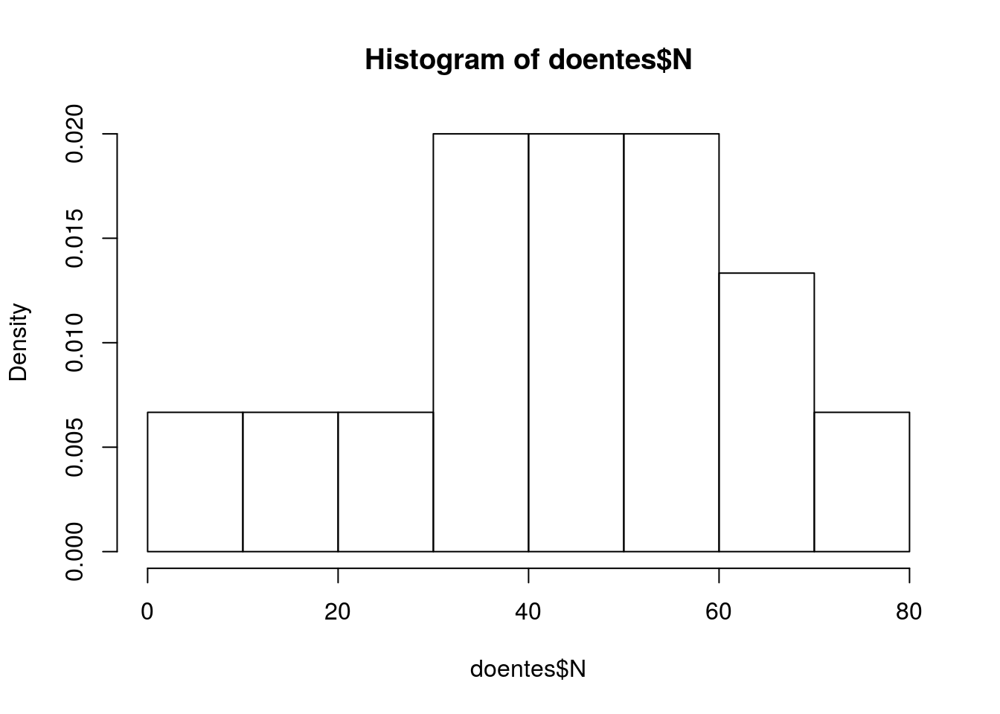
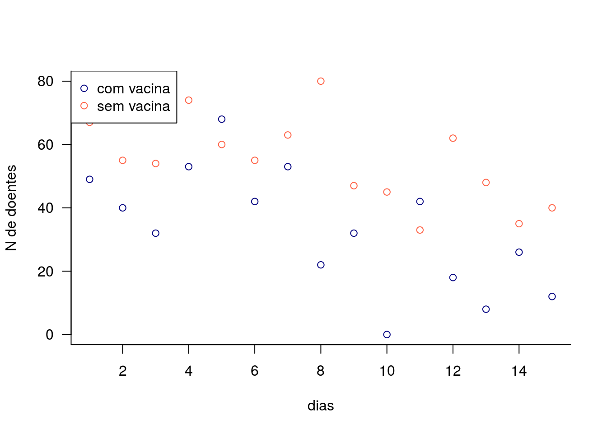
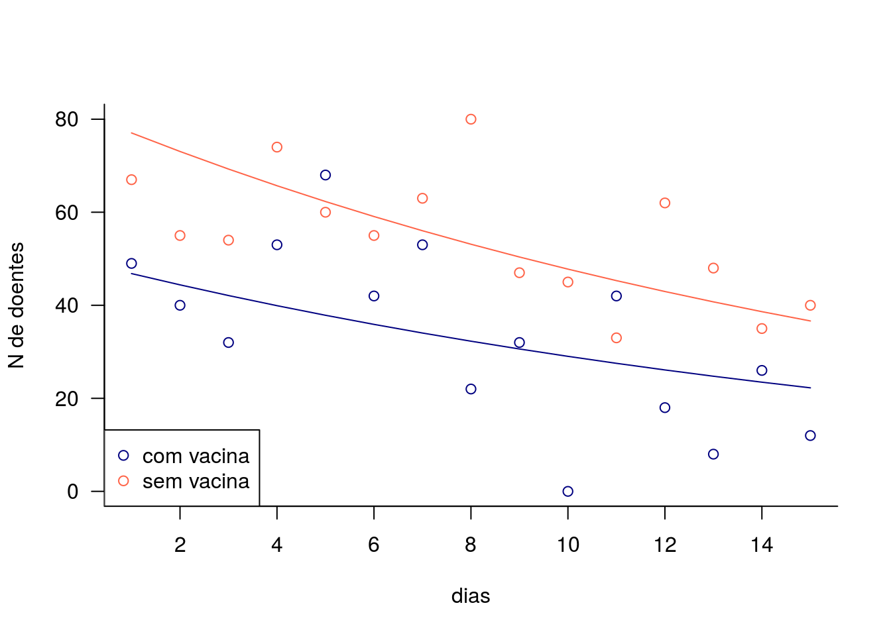
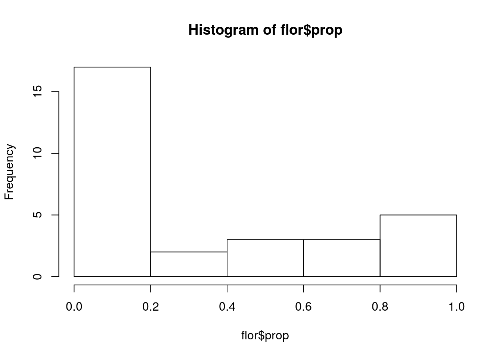
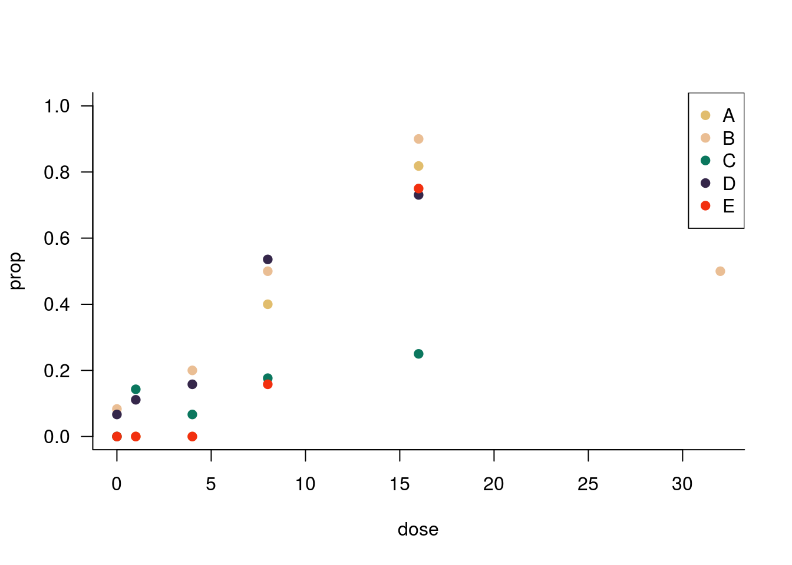
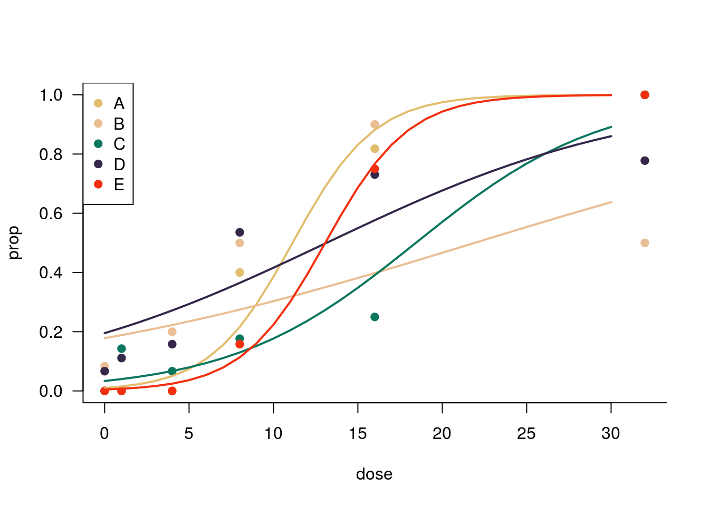

Prática 4: GLM Poisson e Binomial
Sara Mortara
6 de dezembro
Nem tudo na vida é normal. Estamos aqui para aprender como construir modelos lineares para variáveis com erro não normal.
1. Decaimento do número de doentes
No contexto da epidemiologia, após o pico de contaminação espera-se que haja um declínio no número de doentes contaminados com o vírus da influenza. Sabendo que conhecemos o pico de contaminação, fizemos uma observação controle em dois locais onde: um onde havia controle por vacina e outro sem controle.
Pergunta: vacina acelera o decaimento da epidemia de influenza?
Hipóteses:
A vacina é eficaz e em local onde há o controle da vacina, o decaimento da infestação é maior
A vacina não eficaz e não há diferença no decaimento do número de doentes entre locais com e sem vacina ao longo do tempo
Previsão:

Modelos
N de doentes ~ tempo + tratamento
N de doentes ~ tempo
N de doentes ~ 1
Lendo e entendendo os dados
## lendo os dados
### ajuste para o seu caminho
doentes <- read.csv("dados/doentes.csv")Inspecione os dados em um histograma.
hist(doentes$N, probability = TRUE)
E vamos olhar o sumário dos dados:
summary(doentes)## N dias local
## Min. : 0.00 Min. : 1.00 A:15
## 1st Qu.:32.25 1st Qu.: 4.25 B:15
## Median :46.00 Median : 8.00
## Mean :43.83 Mean : 8.00
## 3rd Qu.:55.00 3rd Qu.:11.75
## Max. :80.00 Max. :15.00E também a relação entre a variável preditora e a resposta.
y.lim <- range(doentes$N) # padronizando o limite do eixo y
plot(N ~ dias, data=doentes[doentes$local=="A",],
col='tomato', ylim=y.lim,
ylab="N de doentes", las=1, bty='l')
points(N ~ dias, data=doentes[doentes$local=="B",], col='navy')
legend("topleft", c("com vacina", "sem vacina"),
col=c("navy", "tomato"), pch=1)
Construindo os modelos
Agora vamos construir os modelos para cada uma das hipóteses.
#hipótese 1 vacina funciona
p01 <- glm(N ~ dias + local, data=doentes, family='poisson')
# hipótese 2 vacina não funciona
p02 <- glm(N ~ dias, data=doentes, family='poisson')
# hipótese 3
p03 <- glm(N ~ 1, data=doentes, family='poisson')Incluímos também uma terceira hipótese de ausência de efeito. No caso deste exemplo, qual a diferença entre a hipótese 2 e 3? Ambas não seriam uma hipótese nula em relação à hipótese central? Você acha que é sempre necessário incluir uma hipótese de ausência total do efeito?
Vamos inspecionar agora o sumário de cada um dos modelos.
Use a função summary e atente para os coefientes estimados e a proporção de variação residual.
summary(p01)
summary(p02)
summary(p03)E agora vamos construir a tabela de AIC. Lembre-se, para isso precisamos do pacote bbmle. Para carregar o pacote usamos a função library.
library(bbmle)
AICtab(p01, p02, p03)## dAIC df
## p01 0.0 3
## p02 77.2 2
## p03 143.3 1Vamos então construir o gráfico de ajuste do modelo aos dados. Isto não é trivial para os GLMs e vamos usar a função predict para nos ajudar.
# primeiro crimos uma sequência para o eixo x
xv<-1:15
# vamos criar um vetor com 15x a letra "A" do primeiro tratamento
tA<-rep("A",15)
# calculando os valores previstos para o tratamento A
yA<-predict(p01,list(local=factor(tA),dias=xv),type="response")
# vamos também criar um vetor com 15x a letra "B" para o segundo tratamento
tB<-rep("B",15)
# calculando os valores previstos para o tratamento B
yB<-predict(p01,list(local=factor(tB),dias=xv),type="response")Ajuste do modelo aos dados
Agora vamos plotar os valores observados e acrescentar os valores previstos pelo melhor modelo.
# plot dos dados do tratamento A
plot(N ~ dias, data=doentes[doentes$local=="A",],
col='tomato', ylim=y.lim,
ylab="N de doentes", las=1, bty='l')
# adicionando os dados do tratamento B
points(N ~ dias, data=doentes[doentes$local=="B",], col='navy')
# incluindo a legenda
legend("bottomleft", c("com vacina", "sem vacina"),
col=c("navy", "tomato"), pch=1)
# linha dos previstos para o tratamento A
lines(xv,yA, col="tomato")
# linha dos previstos para o tratamento B
lines(xv,yB, col="navy")
O modelo explica boa parte da variação dos dados?
2. Floração após indução do crescimento
Este é um exemplo de um experimento no qual cinco variedades de plantas perenes foram submetidas a seis doses de um hormônio de crescimento. Após seis semanas, foram as plantas foram classificadas em com ou sem flor.
Pergunta: O hormônio de crescimento facilita a floração? O efeito do hormônio é diferente entre as variedades de planta?
Hipóteses:
Dosagens maiores de hormônio aumentam a proporção de plantas em flor
Dosagens maiores de hormônio aumentam a proporção de plantas em flor e a resposta sensibilidade de cada variedade de planta ao hormônio é diferente
Não há efeito do hormônio ou variedade de planta na resposta
Modelos
Proporção de flor ~ dosagem
Proporção de flor ~ dosagem + variedade
Proporção de flor ~ 1
Lendo e entendendo os dados
Vamos ler a planilha de dados. Lembre-se de ajustar o caminho para o seu diretório de trabalho.
flor <- read.table("dados/flowering.txt", header=TRUE, sep='\t')Vamos inspecionar os dados.
summary(flor)## flowered number dose variety
## Min. : 0.000 Min. :10 Min. : 0.00 A:6
## 1st Qu.: 0.250 1st Qu.:12 1st Qu.: 1.00 B:6
## Median : 3.000 Median :15 Median : 6.00 C:6
## Mean : 5.767 Mean :16 Mean :10.17 D:6
## 3rd Qu.: 9.000 3rd Qu.:18 3rd Qu.:16.00 E:6
## Max. :21.000 Max. :28 Max. :32.00Vamos calcular a proporção de flores e o olhar os valores em um histograma.
flor$prop <- flor$flowered/flor$numberhist(flor$prop)
Vamos então olhar para a relação entre a variável preditora e a resposta.
BÔNUS
Temos cinco variedades de planta e queremos utilizar uma cor para cada. Vamos nos divertir um pouco na escolha de cores. Você tem duas opções: 1. usar uma paleta de cores maravilhosa ou 2. usar uma paleta de cores apenas okey.
Opção 1: paleta de cores maravilhosa

## instale o pacote para a paleta de cores usando o comando:
# install.packages("wesanderson")
## carregue o pacote
library(wesanderson)
# crie um vetor com as cores do filme Rushmore de Wes Anderson
cor <- wes_palette("Rushmore1")Opção 2: paleta de cores okey
## use a funcao rainbow para ecolher 5 cores diferentes
# cor <- rainbow(5)Vamos finalmente, olhar para as variáveis no gráfico:
plot(prop ~ dose, data=flor, type='n', las=1, bty='l') # este comando faz com que nenhum ponto apareça no gráfico. por que?
# aqui, dependendo da paleta de cores que você escolheu seu gráfico ficará maravilhoso, ou não :P
points(prop ~ dose, data=flor[flor$variety=="A",], pch=19,
col=cor[1])
points(prop ~ dose, data=flor[flor$variety=="B",], pch=19,
col=cor[2])
points(prop ~ dose, data=flor[flor$variety=="C",], pch=19,
col=cor[3])
points(prop ~ dose, data=flor[flor$variety=="D",], pch=19,
col=cor[4])
points(prop ~ dose, data=flor[flor$variety=="E",], pch=19,
col=cor[5])
legend("topright", c("A", "B", "C", "D", "E"),
col=cor, pch=19)
Construindo os modelos
Agora vamos construir os modelos no R.
# primeiro criamos um vetor com a variável resposta
flor$y1 <- flor$flowered
flor$y2 <- flor$number-flor$flowered
## hipótese 1
b01 <- glm(cbind(y1,y2) ~ dose, data=flor, family="binomial")
## hipótese 2
b02 <- glm(cbind(y1,y2) ~ dose*variety, data=flor, family="binomial")
## hipótese 3
b03 <- glm(cbind(y1,y2) ~ 1, data=flor, family="binomial")Use a função summary para inspecionar os modelos criados.
summary(b01)
summary(b02)
summary(b03)E agora vamos construir a tabela de AIC para os três modelos.
AICtab(b01, b02, b03)## dAIC df
## b02 0.0 10
## b01 39.2 2
## b03 234.3 1Vamos então construir o gráfico do ajuste do modelo aos dados. De novo, este gráfico não é trivial. Vamos entender passo a passo. O melhor aqui é construir um modelo para cada dosagem e plotar o ajuste. Vamos lá.
Primeiro, criamos os modelos:
# variedade A
A <- glm(cbind(y1,y2) ~ dose, data=flor[flor$variety=="A",],
family="binomial")
# variedade B
B <- glm(cbind(y1,y2) ~ dose, data=flor[flor$variety=="B",],
family="binomial")
# variedade C
C <- glm(cbind(y1,y2) ~ dose, data=flor[flor$variety=="C",],
family="binomial")
# variedade D
D <- glm(cbind(y1,y2) ~ dose, data=flor[flor$variety=="D",],
family="binomial")
# variedade E
E <- glm(cbind(y1,y2) ~ dose, data=flor[flor$variety=="E",],
family="binomial")E agora calculamos o predito para cada modelo.
# guardando em um objeto a variável que será o eixo x
xv<-0:30
prevA <- predict(A,list(dose=xv),type="response")
prevB <- predict(B,list(dose=xv),type="response")
prevC <- predict(C,list(dose=xv),type="response")
prevD <- predict(D,list(dose=xv),type="response")
prevE <- predict(E,list(dose=xv),type="response")Vamos terminar com o super gráfico.
### plot que já fizemos antes ###
plot(prop ~ dose, data=flor, type='n', las=1, bty='l') # este comando faz com que nenhum ponto apareça no gráfico. por que?
# aqui, dependendo da paleta de cores que você escolheu seu gráfico ficará maravilhoso, ou não :P
points(prop ~ dose, data=flor[flor$variety=="A",], pch=19,
col=cor[1])
points(prop ~ dose, data=flor[flor$variety=="B",], pch=19,
col=cor[2])
points(prop ~ dose, data=flor[flor$variety=="C",], pch=19,
col=cor[3])
points(prop ~ dose, data=flor[flor$variety=="D",], pch=19,
col=cor[4])
points(prop ~ dose, data=flor[flor$variety=="E",], pch=19,
col=cor[5])
legend("topleft", c("A", "B", "C", "D", "E"),
col=cor, pch=19)
lines(xv,prevA, col=cor[1], lwd=2)
lines(xv,prevB, col=cor[2], lwd=2)
lines(xv,prevC, col=cor[3], lwd=2)
lines(xv,prevD, col=cor[4], lwd=2)
lines(xv,prevE, col=cor[5], lwd=2)
Como podemos perceber, o modelo é razoável para as variedades A e E, é moderado para a variedade C e muito fraco para B e D. Para as variedades B e D, o modelo super-estima a proporção de flores na dose zero. Para a variedade B parece haver uma inibição na floração na dose maior porque o gráfico cai de 90% na dosagem 16 para apenas 50% na dosagem 32. A variedade D parece ter crescimento assintótico até menos de 100% de floração. As falhas do modelo em se ajustar bem aos dados merecem bastante atenção. Ainda não fomos capazes de modelar bem os dados. Que tipo de estudo precisaríamos fazer para entender melhor a resposta das diferentes variedades às dosagens do hormônio?
FIM!
Se você chegou até o final desta pRática, considere-se vencedoR(a)!